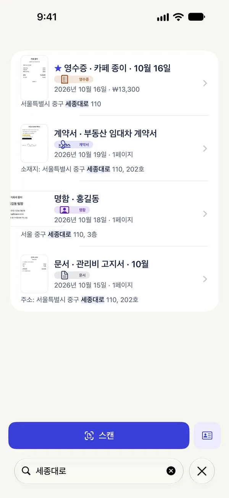
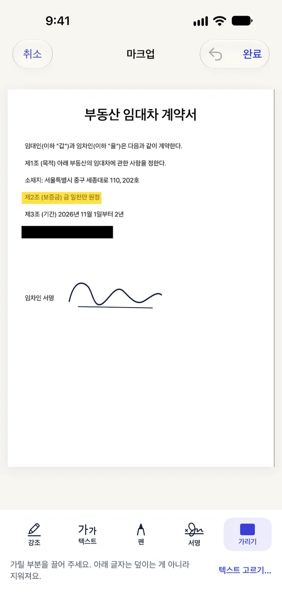
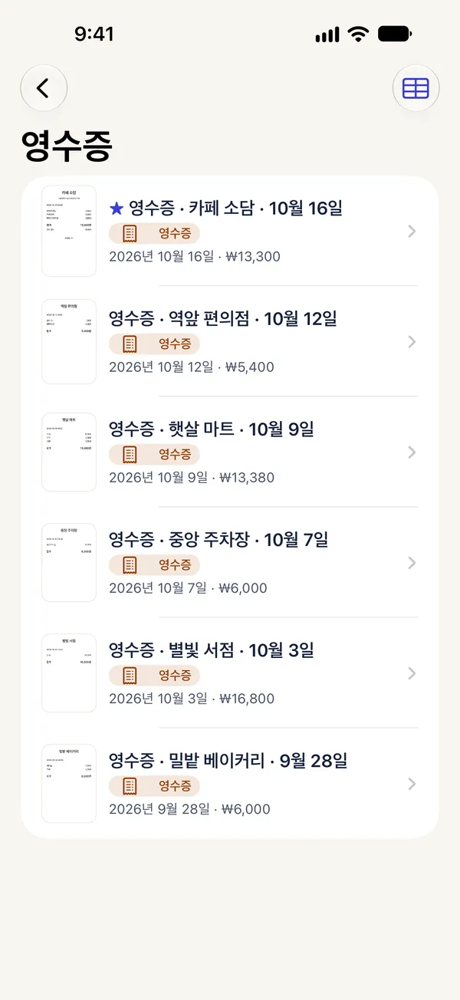

문서를 업로드하지 않는
스캐너
계약서, 영수증, 신분증, 학교 서류를 이 iPhone에만 남는 진짜 PDF로 스캔하세요. 계정도, 업로드도, 워터마크도 없어요.
iPhone 안 Paperkeep 폴더에 일반 PDF로
한국어·일본어·영어를 기기 안에서
무료로 내보내도 절대 없어요
지운 문서는 최근 삭제된 항목에
깨끗한 PDF로
스캔해요
여러 페이지를 이어서 찍으면 가장자리를 찾아 반듯하게 펴 줘요. 사진 보관함이나 iPhone의 파일에서 가져올 수도 있어요.
- 필터: 원본, 보정, 회색조, 흑백, 사진 — 문서 종류별로 마지막 선택을 기억해요
- 순서 바꾸기, 회전, 네 모서리로 다시 자르기, 실행 취소되는 삭제
- 사진 보관함 접근 권한 없이 가져오기
- 홈 화면·잠금 화면 위젯에서 바로 스캐너 열기

문서 속 글자까지
찾아요
한국어, 일본어, 영어 글자를 iPhone 안에서 읽어요. 제목뿐 아니라 문서 안의 글자로도 찾을 수 있고, 검색은 무료예요.
- 문서 종류(영수증, 신분증, 명함, 계약서, 메모)와 제목을 제안해요. 둘 다 바꿀 수 있어요
- 페이지 텍스트 복사
- Pro: 다른 앱에서도 글자로 찾을 수 있는 검색 가능한 PDF
서명하고, 표시하고,
가려요
서명, 강조, 글쓰기, 가리기를 문서 위에서 바로 해요. 가린 부분의 글자는 덮이는 게 아니라 지워져요.
- 합치기, 나누기, 페이지 추출
- 실제 크기를 먼저 보여 주는 용량 줄이기, 암호 설정
- 서명은 다음을 위해 이 iPhone 안에만 저장돼요


영수증은
알아서 정리
영수증의 날짜와 합계를 읽어 카드에 보여 주고, 영수증 스마트 폴더에 모아 둬요. 명함은 내용을 확인한 뒤 새 연락처로 저장할 수 있어요.
- Pro: 기간을 골라 영수증을 CSV로 내보내기(날짜, 가게, 합계, 통화)
- Pro: 신분증 모드로 앞뒤를 실제 크기로 A4 한 장에
세 단계면 충분해요
스캔하거나 가져오기
여러 페이지를 이어서 찍거나, 사진과 파일에서 가져와요.
다듬고 저장
자르고, 돌리고, 필터를 고르면 iPhone 안에 PDF로 저장돼요. 글자도 기기 안에서 읽어요.
찾고 공유
문서 속 글자로 찾고, PDF·JPEG·PNG로 공유하거나 프린트해요. 워터마크는 없어요.
문서는 iPhone 밖으로
나가지 않아요
Paperkeep에는 서버도, 계정도, 분석 도구도 없어요. 스캔, 글자 인식, 모든 도구, 검색이 이 iPhone 안에서 동작하고, 구매만 App Store가 처리해요.
서버도 네트워크 코드도 없어요.
App Store 개인정보 라벨: 데이터 수집 안 함.
iPhone이 잠겨 있는 동안 문서 파일은 읽을 수 없게 보호돼요.
위젯은 페이지나 글자를 보여 주지 않고, 잠근 문서는 아예 나타나지 않아요.
스캔은 무료,
PDF 도구는 Pro
스캔, 저장, 정리, 검색, 공유와 프린트는 무료예요. 횟수 제한도 워터마크도 없어요. Pro는 검색 가능한 PDF, 서명·가리기 같은 PDF 도구, 신분증 모드, 영수증 CSV, 폴더 잠금을 더해요.
Paperkeep Pro 주간
- 모든 Pro 기능
- 이번 주만 필요할 때 알맞아요
- 언제든 해지
Paperkeep Pro 연간
- 모든 Pro 기능
- 매주 쓰신다면 연간이 더 저렴해요
- 언제든 해지
Paperkeep Pro 평생 이용
- 모든 Pro 기능
- 갱신 결제 없음
구독은 기간이 끝나기 최소 24시간 전에 해지하지 않으면 자동으로 갱신돼요. 결제는 Apple 계정으로 청구되고, 설정 › [내 이름] › 구독에서 관리하거나 해지할 수 있어요. 주간 요금제에는 무료 체험이 없어요. 표시된 가격은 한국 기준이며 국가별로 달라요.
궁금한 점
문서가 어디 저장되나요?
파일 앱 › 나의 iPhone › Paperkeep에 일반 PDF로 저장돼요. 그곳에서 열고, 이름을 바꾸고, 옮기거나 복사해도 다음에 Paperkeep을 열면 바뀐 내용을 따라가요.
Paperkeep이 문서를 업로드하나요?
아니요. Paperkeep에는 서버도 네트워크 코드도 없어요. 글자 인식과 검색도 이 iPhone 안에서 이뤄지고, 구매만 Apple의 App Store가 처리해요.
무료로 어디까지 쓸 수 있나요?
스캔, 저장, 정리, 문서 속 글자 검색, PDF·JPEG·PNG 공유와 프린트, 명함을 연락처로 저장, 페이지 텍스트 복사, 앱 잠금은 무료예요. 무료로 내보내도 워터마크는 없어요. Pro는 검색 가능한 PDF, 서명·가리기 같은 PDF 도구, 신분증 모드, 영수증 CSV, 폴더 잠금, 파일 이름 규칙을 더해요.
무료 체험이 있나요?
한국과 일본에서는 연간 요금제의 신규 구독자에게 7일 무료 체험이 있어요. 주간 요금제에는 무료 체험이 없어요. 체험을 시작할 때 알림을 선택하면 결제 24시간 전에 한 번 알려드려요.
글자 인식이 틀렸어요.
글자는 iPhone 안에서 읽는데, 흐린 영수증처럼 틀릴 때가 있어요. 문서 화면에서 이름이나 종류를 바꿀 수 있어요. 중요한 숫자는 꼭 확인하세요.
구독을 해지하면 만든 문서는요?
그대로 남아요. Pro를 해지해도 이미 만든 문서는 지워지지 않고, 검색 가능한 PDF도 계속 검색돼요. 해지는 설정 › [내 이름] › 구독에서 할 수 있어요.
내 서류는
내 iPhone에
곧 App Store에서 만나요.